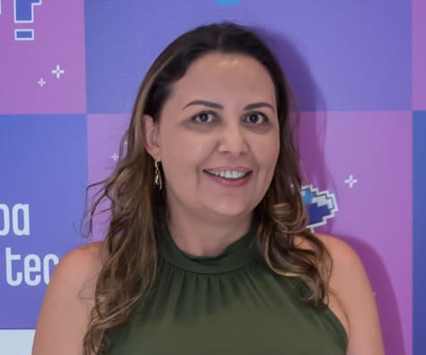
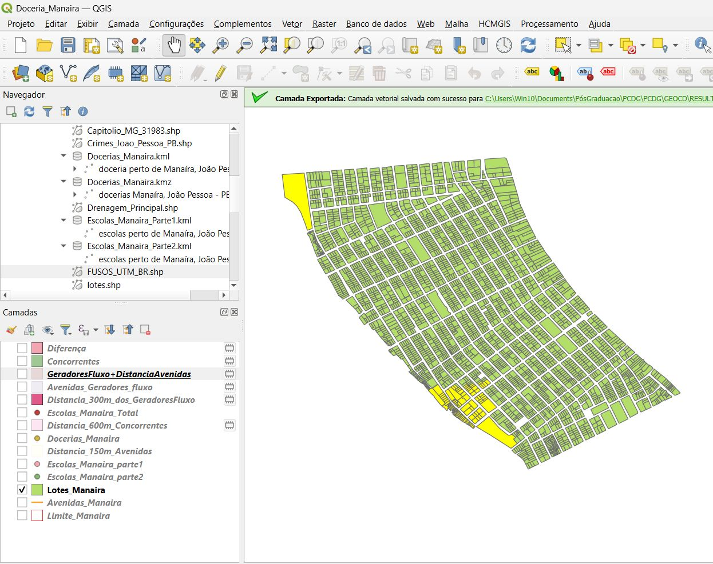
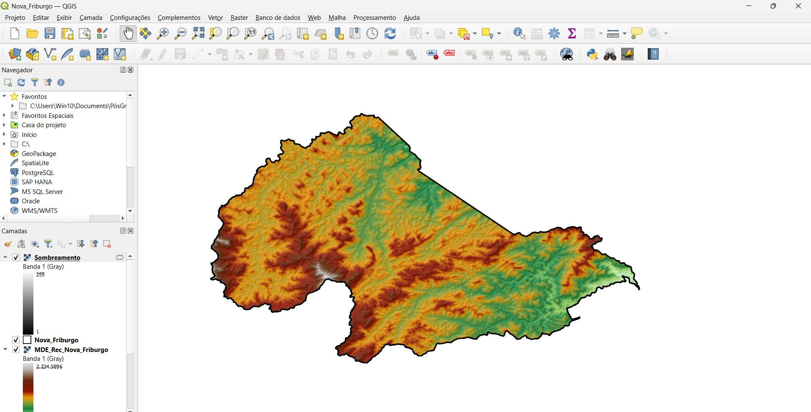
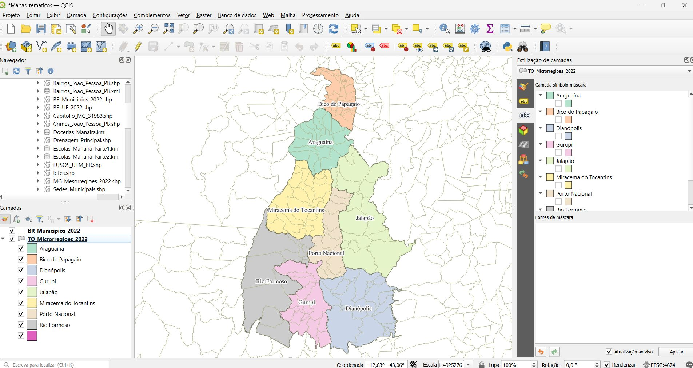
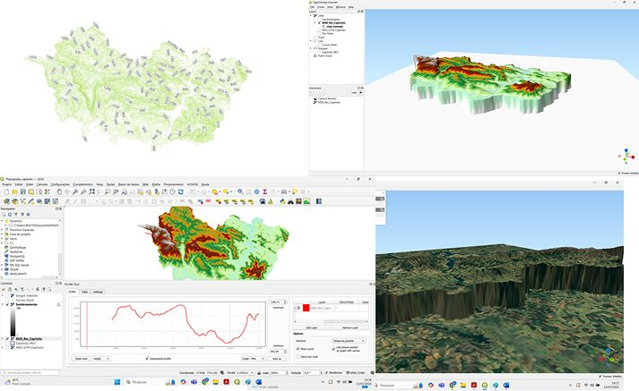
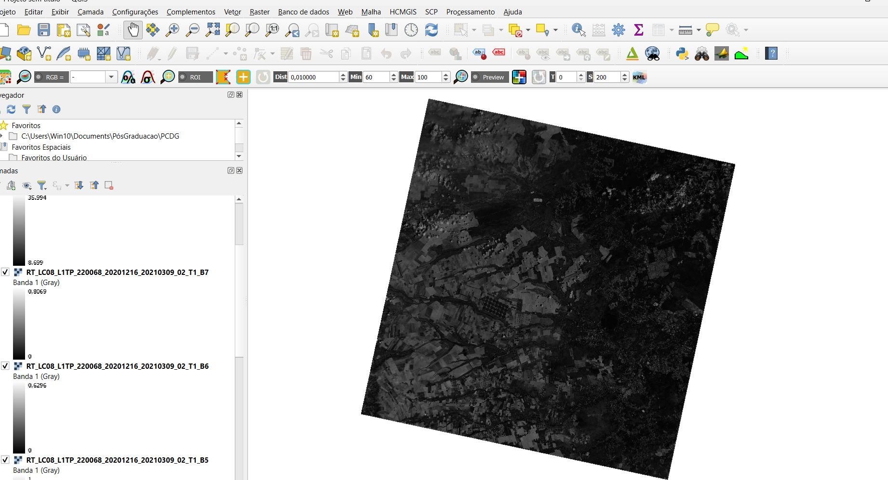
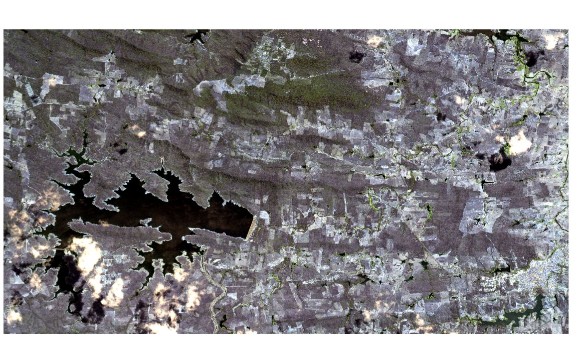

Discord
Copia da pagina do Discord
Ver projeto
Sou capixaba, formada em Turismo, e desde o início da minha carreira fui movida por uma pergunta constante: como transformar informação em decisão? Em 2007, deixei Vitória e me mudei para Florianópolis com o objetivo de me especializar em Geoprocessamento. Embora o caminho profissional naquele momento tenha seguido pelo mercado de Turismo, essa escolha foi determinante para construir minha base analítica e meu interesse por dados, território e planejamento. Ao longo de mais de duas décadas, atuei em praticamente todos os segmentos do trade turístico — agências de viagens, turismo corporativo, recepção, reservas, eventos e gestão operacional. Essa vivência me deu uma visão sistêmica, foco em processos, atendimento ao usuário e resolução de problemas em ambientes complexos. Durante esse período, concluí minha especialização em Geoprocessamento, trabalhando com banco de dados, lógica computacional e programação em Java, ainda em um momento em que o setor pouco dialogava com desenvolvimento de software. A ausência de caminhos claros no mercado e barreiras formais me afastaram temporariamente da tecnologia — mas não do pensamento analítico. Após a maternidade, empreendi no turismo receptivo em Santa Catarina, experiência interrompida pela pandemia. Foi nesse ponto de ruptura que tomei uma decisão definitiva: migrar para a área de tecnologia. Iniciei minha formação como Desenvolvedora Full Stack pelo SENAI, com foco em Angular, Java e Spring Boot. No ano seguinte, ampliei minha base no curso de Analista de Desenvolvimento Web, trabalhando com React, Node.js e Express, além de práticas completas de DevOps, testes, cloud (AWS, Azure), Docker, Kubernetes, versionamento com Git, metodologias ágeis (Scrum e Kanban) e trabalho colaborativo. Ao finalizar cursos, iniciei a Pós-Graduação em Ciência de Dados Geográficos, conectando definitivamente minha trajetória em Geoprocessamento com programação, análise de dados, visualização, automação e IA. Hoje, meu objetivo profissional é claro: atuar na interseção entre tecnologia, dados, mapas e inteligência artificial, desenvolvendo soluções que apoiem análises, planejamento e tomada de decisão baseada em dados. Este portfólio reflete essa transição — não como ruptura, mas como evolução.
Copia da pagina do Discord
Ver projetoCopia da pagina do YouTube
Ver projetoCom foco em acessibilidade
Ver projetoClone loja de bike
Ver repositórioClone da pagina do Zé Delivery
Ver repositórioClone da pagina do Netflix
Ver repositórioPlataforma de turismo sustentável desenvolvida em equipe, com aplicação Full Stack para gerenciamento de locais de visitação.
Sistema de gestão hospitalar desenvolvido em equipe com controle de pacientes e atendimentos.
Tecnologias: Python
Ver repositórioTecnologias: Node.js
Ver códigoTecnologias: Node.js
Ver repositórioTecnologias: Node.js
Ver repositórioTecnologias: Node.js
Ver repositórioO Google Earth Engine é uma plataforma em nuvem voltada para análise geoespacial em escala planetária.
Projetos desenvolvidos com foco em análise de imagens, processamento geoespacial e uso da plataforma Google Earth Engine.
Trabalhos desenvolvidos durante a pós-graduação em Ciência de Dados Geográficos, utilizando QGIS para análise espacial, geoprocessamento e manipulação de imagens.

Análise espacial para localização ideal com Buffer e dados do IBGE.

Modelo Digital de Elevação com sombreamento.

Tematização de variáveis categóricas.

Curvas de nível e visualização 3D.

Correção com SCP em imagens Landsat.

Mosaico e recorte CBERS4A com melhor resolução.